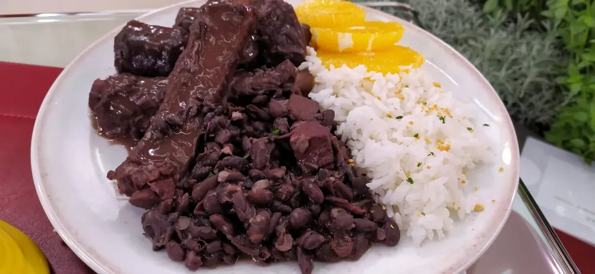
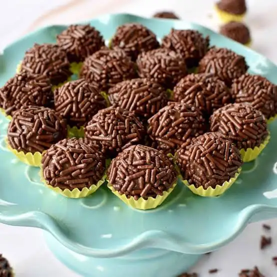
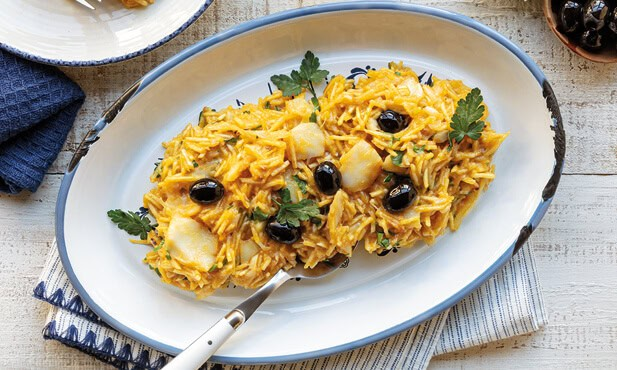
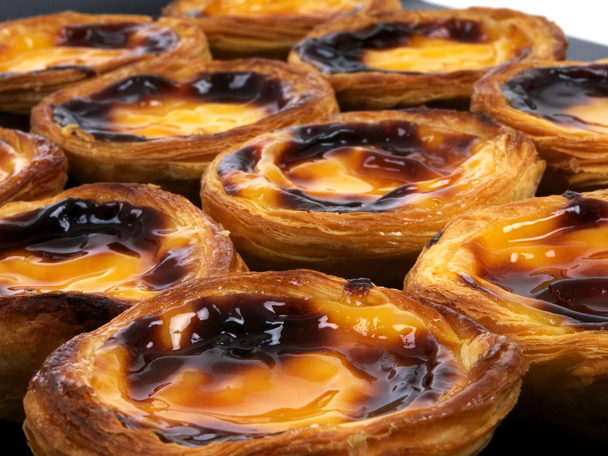
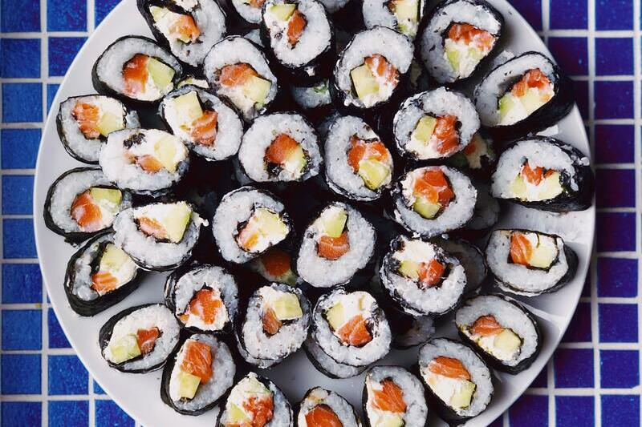
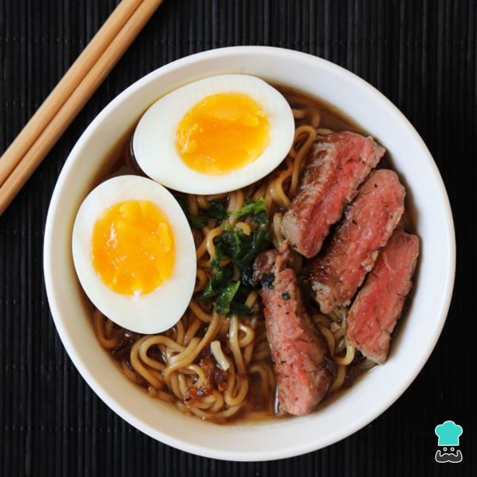

Pratos típicos do Brasil
-
Feijoada
Considerada o prato nacional do Brasil. É um cozido robusto de feijão preto com várias partes de carne de porco e boi (como linguiça, paio, bacon e carne-seca). Tradicionalmente, é servida com arroz branco, couve refogada na manteiga, farofa e fatias de laranja.

Feijoada -
Brigadeiro
O doce mais famoso das festas brasileiras. Criado na década de 1940, é uma mistura simples e deliciosa de leite condensado, achocolatado ou cacau em pó, e manteiga, cozidos até desgrudar da panela. Depois de frio, é moldado em bolinhas e coberto com granulado.

Brigadeiro
Pratos típicos de portugal
-
Bacalhau à Brás
Um dos pratos de bacalhau mais populares. Consiste em bacalhau desfiado refogado com cebola e alho, misturado com batata frita palha bem fina e ovos batidos. Finaliza-se com salsa picada e azeitonas pretas, resultando em um prato super cremoso.

Bacalhau à Bras -
Pastel de Nata
A joia da doçaria portuguesa. É uma tartelhete de massa folhada crocante recheada com um creme rico à base de leite, gemas de ovos e açúcar. É assado em forno muito quente para que o topo fique levemente queimado e costuma ser servido polvilhado com canela e açúcar de confeiteiro.

Pastel de nata
Pratos típicos do Japão
-
Sushi
Talvez o prato japonês mais conhecido no mundo. Consiste em pequenos bolinhos de arroz temperado com vinagre de arroz, açúcar e sal, combinados com peixe cru ou frutos do mar frescos, vegetais e, às vezes, envoltos em folhas de alga marinha (nori).

Sushi -
Ramen
Uma sopa de macarrão reconfortante e muito popular. É composto por um caldo rico e aromático (que pode ser à base de porco, frango, peixe ou soja), macarrão de trigo e acompanhamentos como fatias de carne de porco (chashu), ovo cozido com gema mole, broto de bambu e alga.

Ramen